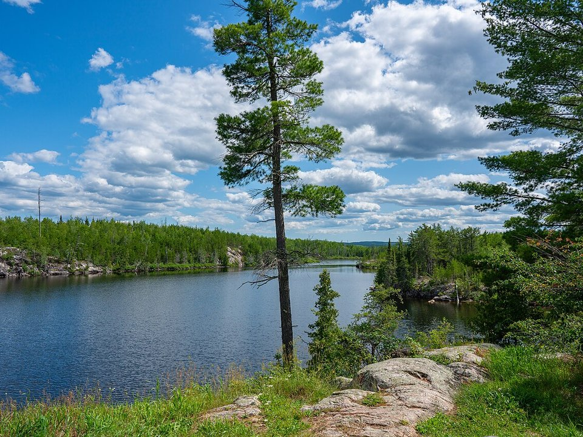

Gunflint Lake · Lodge and cabins
Gunflint Lodge
A Northwoods resort since 1925, with cabins, outfitting and dining on Gunflint Lake.
Official details for Gunflint LodgeFly to the edge of the Boundary Waters.
The Gunflint Trail climbs 57 miles from Grand Marais on Lake Superior into the border lakes, and Gunflint Lodge sits at its heart on Gunflint Lake, with Canada across the water. Floatplanes can land right at the lodge; landplanes use Grand Marais. Stay in a cabin with a fireplace, paddle into the Boundary Waters for a day, visit the Chik-Wauk museum at the end of the trail and look for moose and the Milky Way.

Time illustration: direct distance at 150 KTAS plus 15 minutes for departure and arrival, matching the discovery page. Use ForeFlight for your actual flight plan.
Check the weekend weather at both ends → Flight category, your minimums and the crosswind on the best runway.
CKC, Grand Marais/Cook County, is a non-towered field with a 5,002-foot runway about an hour by road from Gunflint Lake. Floatplanes and amphibians can land at Gunflint Lodge’s own base, M56.
Grand Marais/Cook County Airport, Grand Marais, MN
Remote area with few alternates. Confirm fuel and a rental car or lodge shuttle before you go. No live fuel price is shown.
Border-lakes weather: morning fog on the lakes, fast-moving summer storms, wildfire smoke some summers, remote terrain with few alternates, and ice from about mid-November to early May. About 1000 nm from Myrtle Beach: a long cross-country day with two fuel stops. Plan four or more nights, or break the trip with an overnight on the way.
Gunflint Lake, MN · 218-388-0501
Water lanes: 08W/26W, 6,000 × 100 ft.
The Canadian border runs down the middle of Gunflint Lake. Stay on the U.S. side unless you have cleared customs. Boundary Waters wilderness airspace and landing rules restrict flights over and onto many nearby lakes; check the chart before you go.
Call the lodge before you land.
Water landing rules, conditions and docking change; call the base and check the chart supplement before you go.
Rates and availability need travel dates. Summer and fall weekends book early.
A Northwoods resort since 1925, with cabins, outfitting and dining on Gunflint Lake.
Official details for Gunflint LodgeFamily-run cabins on Gunflint Lake.
Official details for Heston’s LodgeLakeside cabins and camping midway up the trail.
Official details for Bearskin LodgePrices and availability for your dates, through our partner Stay22. This is an affiliate link: we may earn a commission at no cost to you. The picks above are never paid.
Reserve weekend dinners.
Northwoods cooking in the lodge dining room, plus the Northern Lights Lounge.
Official details for Justine’s at Gunflint LodgeA classic stop midway up the trail.
Official details for Trail Center LodgeDays are about the water and the woods.
Paddle into the wilderness for a day with outfitting from the lodge.
Gunflint LodgeTrail history and a nature center in a 1930s lodge at the end of the trail.
Gunflint Trail Historical SocietyDusk drives for wildlife and nights under one of the world’s largest dark-sky areas.
Gunflint Trail AssociationThis prototype links to the local visitor site. It does not yet match events to your travel dates.
The museum and nature center are open.
Chik-Wauk for Chik-Wauk seasonBirch and aspen gold along the trail.
Visit Cook County for Fall colorBoundary Waters trips from the lodge.
Gunflint Lodge for Paddling seasonCheck the local calendar when choosing a weekend, and confirm dates and tickets with the organizer.
A sample Northwoods weekend. This is a long flight; plan four or more nights. No bookings or availability confirmed.
Land at M56 mid-morning (from CKC, the lodge is an hour's drive).
Lunch on the patio at Gunflint Lodge.
A short paddle, then back to the airport.
Land at CKC or M56, subject to weather, your fuel stop and your actual flight plan.
Settle into a cabin on the lake.
Dinner at Justine’s.
A Boundary Waters paddle.
Chik-Wauk at the end of the trail.
The Northern Lights Lounge, then stars.
A dawn drive for moose.
Allow time at the base or airport.
Remote terrain and fast storms; leave early.
A Boundary Waters paddle.
Chik-Wauk at the end of the trail.
Dinner at Justine's.
These details make the difference between an appealing list and a usable getaway.
A cabin first, then a car or the lodge shuttle from CKC.
About 1,000 nm. Plan two fuel stops and four nights, or an overnight on the way.
Stay on the U.S. side of the lake; check wilderness airspace.
June to early October.
Picks and links reviewed by WingAway Weekends. Hours, prices, menus and availability change often, so confirm directly with each place before booking. Spotted something out of date, or have a favorite we missed? Email us at hello@wingawayweekends.com.
WingAway Weekends helps you discover the destination. Use ForeFlight and current official aviation information for route, performance, weather, NOTAMs and preflight decisions. Flight planning and PIC responsibility stay with the pilot.